多面体とフラクタル立体 (第 9 回)
| 氏名 | 入佐 啓士
|
|---|
| クラス | 理科 1 類 37 組
|
|---|
| 学生証番号 | J4-220897
|
|---|
□課題9.0 - 12.3節 例 1,2,3: 描画立方体 cube.py myGLCanvas.py polyhedron.py
○プログラムリスト
(例題のため省略)
○実行コマンド
$ python cube.py
○実行結果
(文字列の表示なし)

○考察
今回は、3次元立体を描画するためのMyGLCanvasクラスをインポートし、多面体を描画するためのPolyhedronクラスを継承したCubeクラスによって角度指定をして立方体を描画するプログラムを走らせた。
cube.pyのmain関数ではまず、MyGLCanvasのインスタンスを作成してcanvasを定義している。これは第5回課題で作成したMyCanvasクラスと似た考えで、OpenGLの初期化、シェル引数の管理、ループ起動を管理しやすくなる。次に、Cubeオブジェクトを作成する。Cubeクラスは多面体の描画を行う抽象クラスであるPolyhedronクラスを継承しており、子クラスのCubeクラスで頂点座標などの情報を与えることで立方体を描画できる。
myGLCanvasクラスのdisplayメソッドの最初と最後のglPushMatrixとglPopMatrixが今回初めて使うディスプレイリストに関わっており、より理解を深めるため次のセクションではこれらをコメントアウトしてプログラムを走らせてその変化を考察してみようと思う。
□課題9.0 - 12.3節 例 1,2,3 -v2: 描画立方体(glPushMatrixとglPopMatrixをコメントアウト) cube2.py myGLCanvas2.py polyhedron.py
○プログラムリスト
(例題のため省略)
○実行コマンド
$ python cube2.py
○実行結果
(文字列の表示なし)
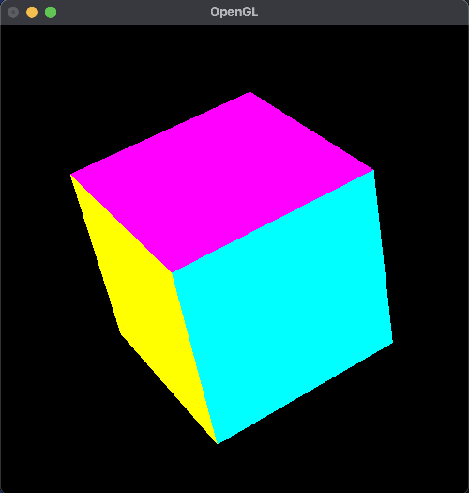
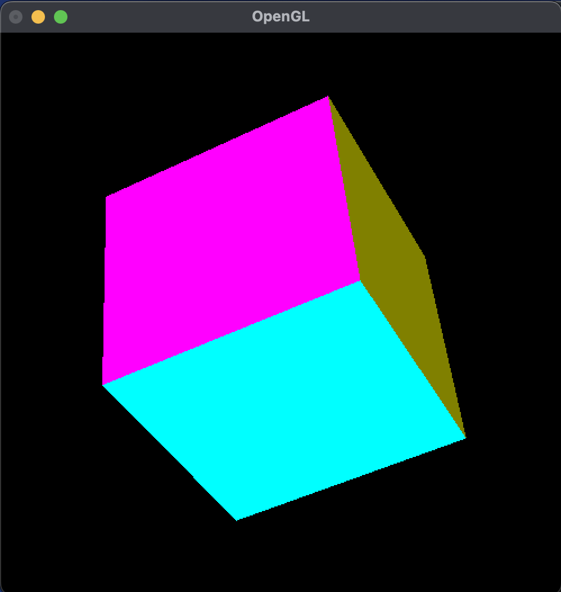
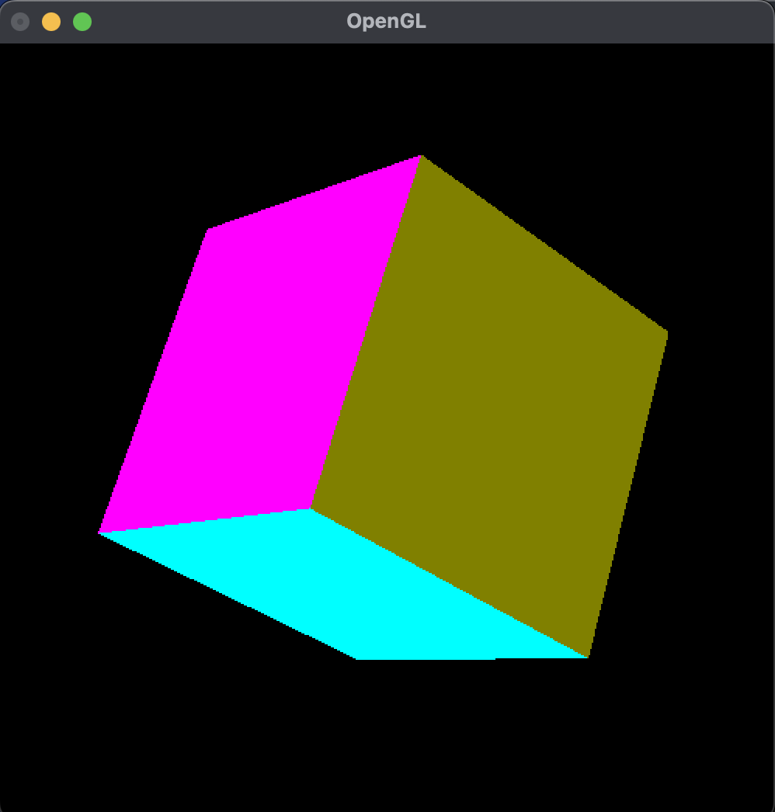
○考察
今回はglPushMatrixとglPopMatrixをmyGLCanvasクラスからコメントアウトしたmyCanvas2.pyをインポートしたcube2.pyを走らせて、ウィンドウのアイコンかを繰り返すとどのような影響が出るのかを検証した。
プログラム実行開始時点では1枚目のように描画に変化がなかったが、ウィンドウのアイコン化を行うと立方体が傾いて、再度開くと2枚目の画像の通りに左下奥に向かって回転した立方体が描画された。さらにウィンドウのアイコン化を繰り返すと3,4枚目のように少しづつ回転をした立方体が描画された。
今回の結果を踏まえて考察すると、今回の変化はウィンドウのアイコン化から再度開くときにdisplay関数が実行されており、glPushMatrixとglPopMatrixがdisplayメソッド終了時点に回転行列が適用される以前の状態に戻さなかったため、display関数が呼ばれるたびに回転行列が適用されていたからだと考える。
□課題9.0 - 12.3節 例 4,5: メンガースポンジ mengerSponge.py fractal.py
○プログラムリスト
(例題のため省略)
○実行コマンド
$ python mengerSponge.py 4
○実行結果
(文字列の表示なし)

○考察
今回は、再帰的な処理を行うFractalクラスをfractal.pyからインポートして継承したMengerSpongeクラスを用いて、立方体を基本立体として1段階ごとに1/3に縮小された形状を配置するというステップを再帰的に行うことでメンガースポンジというフラクタル立体を描画するプログラムを走らせた。
まずFractalクラスのdrawFractalメソッドについて並行移動行列と縮小行列の適用の前後がglPushMatrix,glPopMatrixに挟まれているのは、各再起呼び出しの間で行列の状態を独立させ、それぞれの描画が他の描画に影響を与えないようにするためである。次に、MengerSpongeのコンストラクタで、再帰回数、頂点座標などを初期化する。最後にMyGLCanvasのloopメソッドでループ起動すれば画像の通りのフラクタル図形が得られた。描画には15秒ほど要した。
ハウスドルフ次元に関しては、スケールが3倍になると体積が20倍になるのでlog3(20) = 2.72683であり、かなり3次元に近いと感じた。またフラクタル図形の場合にfractal.pyのdrawFractalメソッド内のglPushMatrixとglPopMatrixをコメントアウトしたら実行結果にどのような変化が現れるのかを次のセクションで考察しようと思う。
□課題9.0 - 12.3節 例 4,5 -v2: メンガースポンジ(glPushMatrixとglPopMatrixをコメントアウト) mengerSponge2.py fractal2.py
○プログラムリスト
(例題のため省略)
○実行コマンド
$ python mengerSponge2.py 1
○実行結果
(文字列の表示なし)

○考察
今回は、FractalクラスのdrawFractalメソッドの変換行列処理を挟むglPushMatrixとglPopMatrixをコメントアウトすることで実行結果にどのような影響があるのかを考察した。
まず、予想としてコメントアウトしたら、各再帰行列のなかで行列の状態が独立せず、基本立体も同じように小さくなってしまうため、全体として小さくなった立体が描画され、基本立体も再帰の度に
並行移動するので位置が初期位置と異なる小さな立体が描画されると推測した。
実行結果は画像の通りで、予想通り1回の反復でかなり小さな立体が描画され、3回以上反復すると小さすぎてほぼ見えなかった。
□課題9.0 - 章末課題1 : 正多面体の表示(正四面体) tetrahedron.py
○プログラムリスト
1 from myGLCanvas import MyGLCanvas, getArgs # myGLCanvasモジュールのimport
2 from polyhedron import Polyhedron # polyhedronモジュールのimport
3
4 class Tetrahedron(Polyhedron): # Cubeクラスの定義
5 def __init__(self): # 初期化メソッド
6 '''
7 正四面体を初期化する
8 '''
9 super().__init__( # Polyhedronクラスの初期化メソッド
10 ((-1, -1, -1),( 1, 1, -1),(1, -1, 1),(-1, 1, 1)), # 頂点座標値
11 ((0, 1, 2), (0, 3, 1), (0, 2, 3), (1, 3, 2)), # 各面の頂点番号列
12 ((0, 1), (0, 3), (0, 2), (1, 2), (2, 3), (3, 1)), # 各稜線の頂点番号列
13 (( 0, 1, 1), ( 1, 0, 1), ( 1, 1, 0), (0, 0, 1)) ) # 各面の描画色
14
15 def main(): # main関数
16 canvas = MyGLCanvas() # MyGLCanvasの作成
17 dispObj = Tetrahedron() # Cubeオブジェクトの作成
18 canvas.init(dispObj) # OpenGLの初期化
19 canvas.argsInit(getArgs()) # シェル引数/キーボード入力による文字列の取得
20 canvas.loop() # コールバックメソッドの設定とループ起動
21
22 if __name__ == '__main__': # 起動の確認 (コマンドラインからの起動)
23 main() # main関数の呼出
○実行コマンド
$ python tetrahedron.py -40 150 0
○実行結果
(文字列の表示なし)
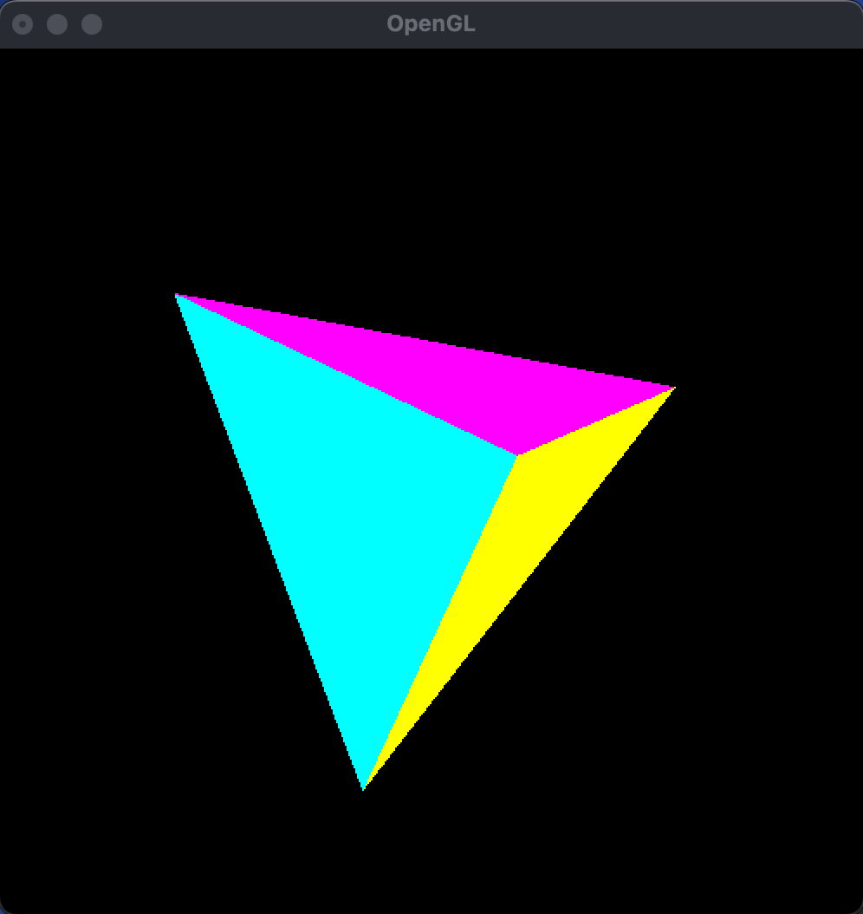
○考察
今回は、多面体を描画するPolyhedronクラスを用いて、正四面体を描画するプログラムを走らせた。
cube.pyを参考にすると、Cubeクラスのコンストラクタで親クラスの初期化を立方体の頂点座標などを入力することで行っていたため、ここに正四面体の情報を入力すれば描画できると考えた。
実行結果は画像の通りで、期待通りに4色で塗り分けられた正四面体が得られた。
□課題9.0 - 章末課題1 : 正多面体の表示(正八面体) octahedron.py
○プログラムリスト
1 from myGLCanvas import MyGLCanvas, getArgs # myGLCanvasモジュールのimport
2 from polyhedron import Polyhedron # polyhedronモジュールのimport
3
4 class Octahedron(Polyhedron):
5 def __init__(self): # 初期化メソッド
6 '''
7 正八面体を初期化する
8 '''
9 sqrt3 = 3**1/2
10 super().__init__( # Polyhedronクラスの初期化メソッド
11 ((0, sqrt3, 0), (-sqrt3, 0, 0), (0, 0, sqrt3), (sqrt3, 0, 0), (0, 0, -sqrt3), (0, -sqrt3, 0)), # 頂点座標値
12 ((0, 1, 2), (0, 2, 3), (0, 3, 4), (0, 4, 1), (5, 3, 2), (5, 4, 3), (5, 1, 4), (5, 2, 1)), # 各面の頂点番号列
13 ((0, 1), (0, 2), (0, 3), (0, 4), (1, 2), (2, 3), (3, 4), (4, 1), (5, 2), (5, 3), (5, 4), (5, 1)), # 各稜線の頂点番号列
14 ((0, 1, 1), (1, 0, 1), (1, 1, 0), (0, 0, 1), (0, 1, 0), (1, 0, 0), (0, 0.5, 0.5), (0.5, 0, 0.5)) ) # 各面の描画色
15
16 def main(): # main関数
17 canvas = MyGLCanvas() # MyGLCanvasの作成
18 dispObj = Octahedron() # オブジェクトの作成
19 canvas.init(dispObj) # OpenGLの初期化
20 canvas.argsInit(getArgs()) # シェル引数/キーボード入力による文字列の取得
21 canvas.loop() # コールバックメソッドの設定とループ起動
22
23 if __name__ == '__main__': # 起動の確認 (コマンドラインからの起動)
24 main() # main関数の呼出
○実行コマンド
$ python octahedron.py -40 150 0
$ python octahedron.py 140 -30 0
○実行結果
(文字列の表示なし)
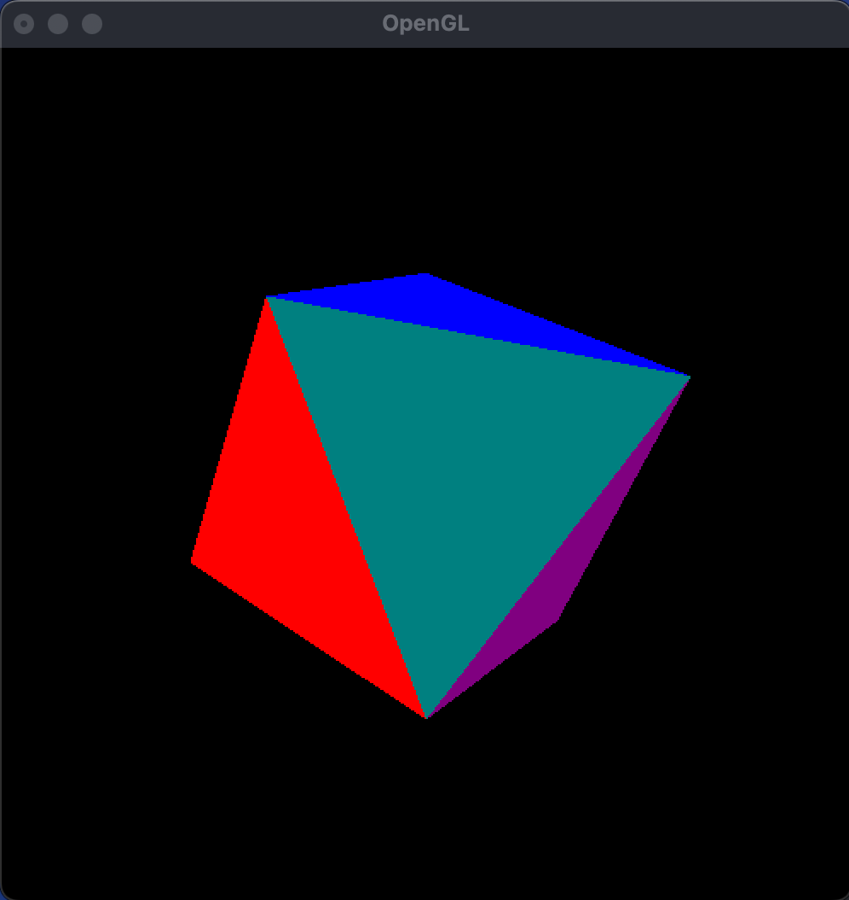
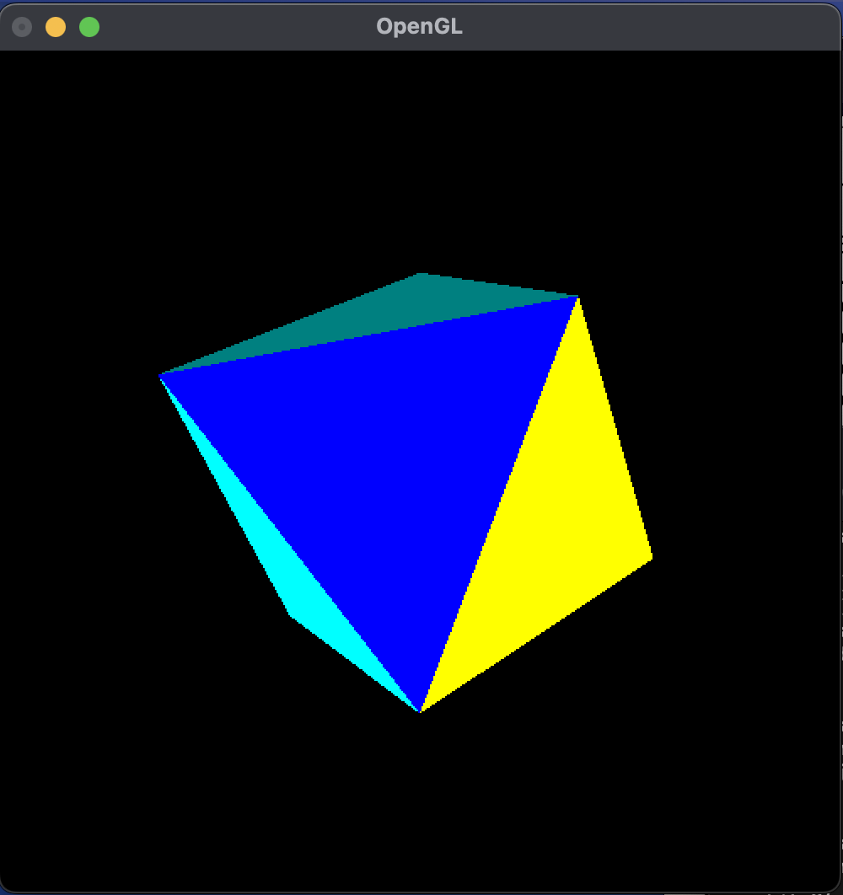
○考察
今回は、多面体を描画するPolyhedronクラスを用いて、正八面体を描画するプログラムを走らせた。
Polyhedronクラスを継承したOctahedronクラスのコンストラクタで正八面体の頂点座標、稜線、描画色の情報を初期化すれば正八面体が描画できると考えた。
実行結果は画像の通りで、2方向から確認したところ正しく8色で塗り分けられた正八面体が描画できたことがわかる。
□課題9.0 - 章末課題1 : 正多面体の表示(正十二面体) dodecahedron.py
○プログラムリスト
1 from myGLCanvas import MyGLCanvas, getArgs # myGLCanvasモジュールのimport
2 from polyhedron import Polyhedron # polyhedronモジュールのimport
3
4 class Dodecahedron(Polyhedron):
5 def __init__(self): # 初期化メソッド
6 '''
7 正十二面体を初期化する
8 '''
9 phi = (1 + 5**0.5) / 2
10
11
12 vertices = [
13 [1, 1, 1], [1, 1, -1], [1, -1, 1], [1, -1, -1],
14 [-1, 1, 1], [-1, 1, -1], [-1, -1, 1], [-1, -1, -1],
15 [1/phi, phi, 0], [1/phi, -phi, 0], [-1/phi, phi, 0], [-1/phi, -phi, 0],
16 [0, 1/phi, phi], [0, -1/phi, phi], [0, 1/phi, -phi], [0, -1/phi, -phi],
17 [phi, 0, 1/phi], [phi, 0, -1/phi], [-phi, 0, 1/phi], [-phi, 0, -1/phi]
18 ]
19
20 faces = [
21 (0, 8, 10, 4, 12), (0, 12, 13, 2, 16), (0, 16, 17, 1, 8),
22 (1, 14, 5, 10, 8), (1, 17, 3, 15, 14), (15, 3, 9, 11, 7),
23 (9, 2, 13, 6, 11), (6, 13, 12, 4, 18), (18, 19, 7, 11, 6),
24 (18, 4, 10, 5, 19), (5, 14, 15, 7, 19), (17, 16, 2, 9, 3)
25 ]
26
27 edges = [
28 (0, 8), (8, 10), (10, 4), (4, 12), (12, 0),
29 (0, 16), (16, 17), (17, 1), (1, 8), (12, 13),
30 (13, 2), (2, 16), (17, 3), (3, 9), (9, 2),
31 (13, 6), (6, 18), (18, 4), (6, 11), (11, 9),
32 (11, 7), (7, 15), (15, 3), (18, 19), (19, 5),
33 (5, 14), (14, 15), (1, 14), (10, 5), (19, 7)
34 ]
35
36 colors = [
37 (1, 0, 0), (0, 1, 0), (0, 0, 1), (1, 1, 0),
38 (1, 0, 1), (0, 1, 1), (0.5, 0.5, 0), (0.5, 0, 0.5),
39 (0, 0.5, 0.5), (0.5, 0.5, 0.5), (0.75, 0.25, 0.25), (0.25, 0.75, 0.75)
40 ]
41
42 super().__init__(vertices, faces, edges, colors)
43
44 def main(): # main関数
45 canvas = MyGLCanvas() # MyGLCanvasの作成
46 dispObj = Dodecahedron() # オブジェクトの作成
47 canvas.init(dispObj) # OpenGLの初期化
48 canvas.argsInit(getArgs()) # シェル引数/キーボード入力による文字列の取得
49 canvas.loop() # コールバックメソッドの設定とループ起動
50
51 if __name__ == '__main__': # 起動の確認 (コマンドラインからの起動)
52 main() # main関数の呼出 # main関数の呼出
○実行コマンド
$ python dodecahedron.py 40 150 0
$ python dodecahedron.py -140 -30 0
○実行結果
(文字列の表示なし)
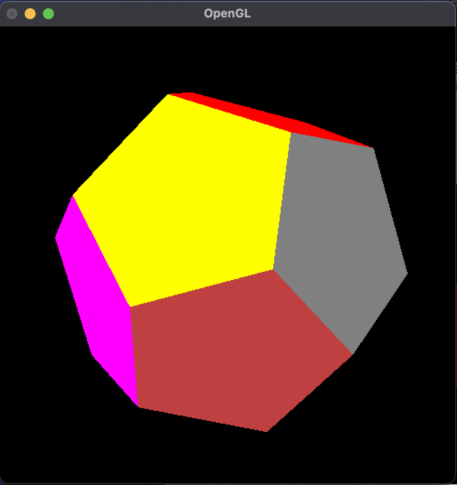
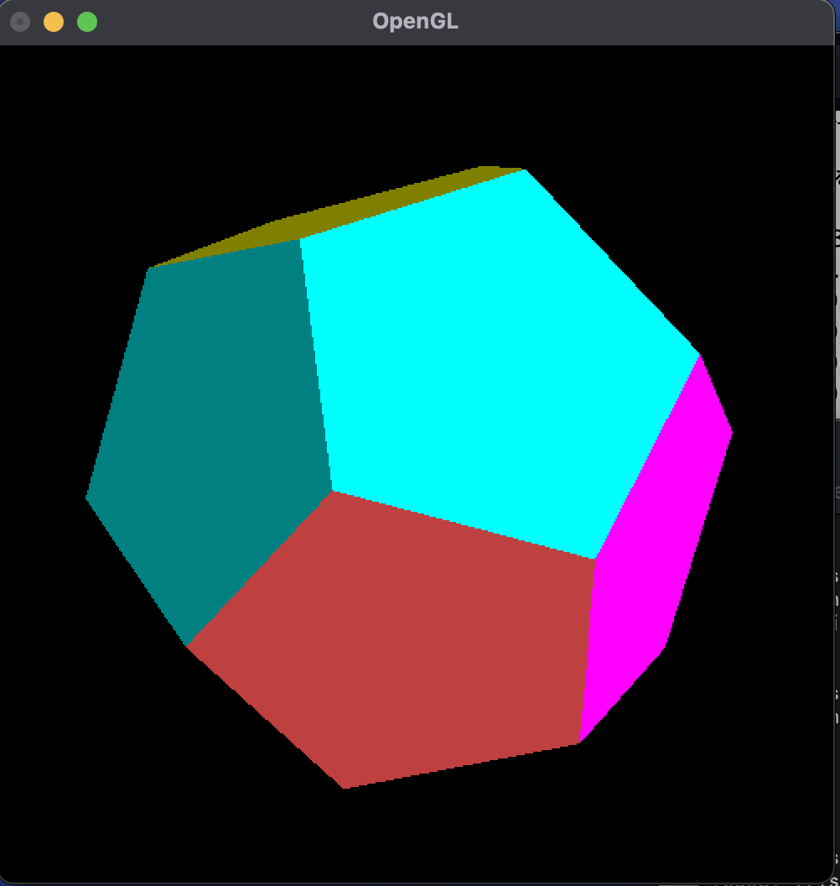
○考察
今回は、多面体を描画するPolyhedronクラスを用いて、正十二面体を描画するプログラムを走らせた。
今回最も難しかったのは、頂点座標のインデックスを反時計回りにfacesに指定することと、稜線を指定することでした。x, y, z軸それぞれに並行な面からインデックスを資料の図形に書き込んで、位置関係を把握してから一つ一つfacesとedgesに書き起こしました。
実行結果は画像の通りにで、2方向から確認すると期待通りに12色で塗り分けられた正十二面体が描画できました。
□課題9.0 - 章末課題1 : 正多面体の表示(正二十面体) icosahedron.py
○プログラムリスト
1 from myGLCanvas import MyGLCanvas, getArgs # myGLCanvasモジュールのimport
2 from polyhedron import Polyhedron # polyhedronモジュールのimport
3
4 class Icosahedron(Polyhedron): # Icosahedronクラスの定義
5 def __init__(self): # 初期化メソッド
6 '''
7 正二十面体を初期化する
8 '''
9 phi = (1 + 5**0.5) / 2
10
11
12 vertices = [
13 [1, phi, 0], [1, -phi, 0], [-1, phi, 0], [-1, -phi, 0],
14 [0, 1, phi], [0, 1, -phi], [0, -1, phi], [0, -1, -phi],
15 [phi, 0, 1], [phi, 0, -1], [-phi, 0, 1], [-phi, 0, -1]
16 , ]
17
18 faces = [
19 (2, 4, 0), (2, 0, 5), (2, 5, 11), (2, 11, 10), (2, 10, 4),
20 (4, 8, 0), (0, 8, 9), (9, 5, 0), (5, 9, 7), (7, 11, 5), (11, 7, 3), (3, 10, 11), (3, 6, 10), (6, 4, 10), (6, 8, 4),
21 (1, 8, 6), (1, 9, 8), (1, 7, 9), (1, 3, 7), (1, 6, 3)
22 ]
23
24 edges = [
25 (2, 4), (2, 0), (2, 5), (2, 11), (2, 10),
26 (4, 0), (0, 5), (5, 11), (11, 10), (10, 4),
27 (4, 8), (8, 0), (0, 9), (9, 5), (5, 7), (7, 11), (11, 3), (3, 10), (10, 6), (6, 4),
28 (6, 8), (8, 9), (9, 7), (7, 3), (3, 6),
29 (1, 8), (1, 9), (1, 7), (1, 3), (1, 6)
30 ]
31
32 colors = [
33 (1, 0, 0), (0, 1, 0), (0, 0, 1), (1, 1, 0),
34 (1, 0, 1), (0, 1, 1), (0.5, 0.5, 0), (0.5, 0, 0.5),
35 (0, 0.5, 0.5), (0.5, 0.5, 0.5), (0.75, 0.25, 0.25), (0.25, 0.75, 0.75),
36 (0.75, 0.75, 0), (0.75, 0, 0.75), (0, 0.75, 0.75), (0.25, 0.25, 0.75),
37 (0.75, 0.25, 0), (0.25, 0, 0.75), (0.25, 0.75, 0.25), (0.75, 0.25, 0.75)
38 ]
39
40 super().__init__(vertices, faces, edges, colors)
41
42 def main(): # main関数
43 canvas = MyGLCanvas() # MyGLCanvasの作成
44 dispObj = Icosahedron() # Icosahedronオブジェクトの作成
45 canvas.init(dispObj) # OpenGLの初期化
46 canvas.argsInit(getArgs()) # シェル引数/キーボード入力による文字列の取得
47 canvas.loop() # コールバックメソッドの設定とループ起動
48
49 if __name__ == '__main__': # 起動の確認 (コマンドラインからの起動)
50 main() # main関数の呼出
○実行コマンド
$ python icosahedron.py 40 -150 0
$ python icosahedron.py -140 30 0
○実行結果
(文字列の表示なし)
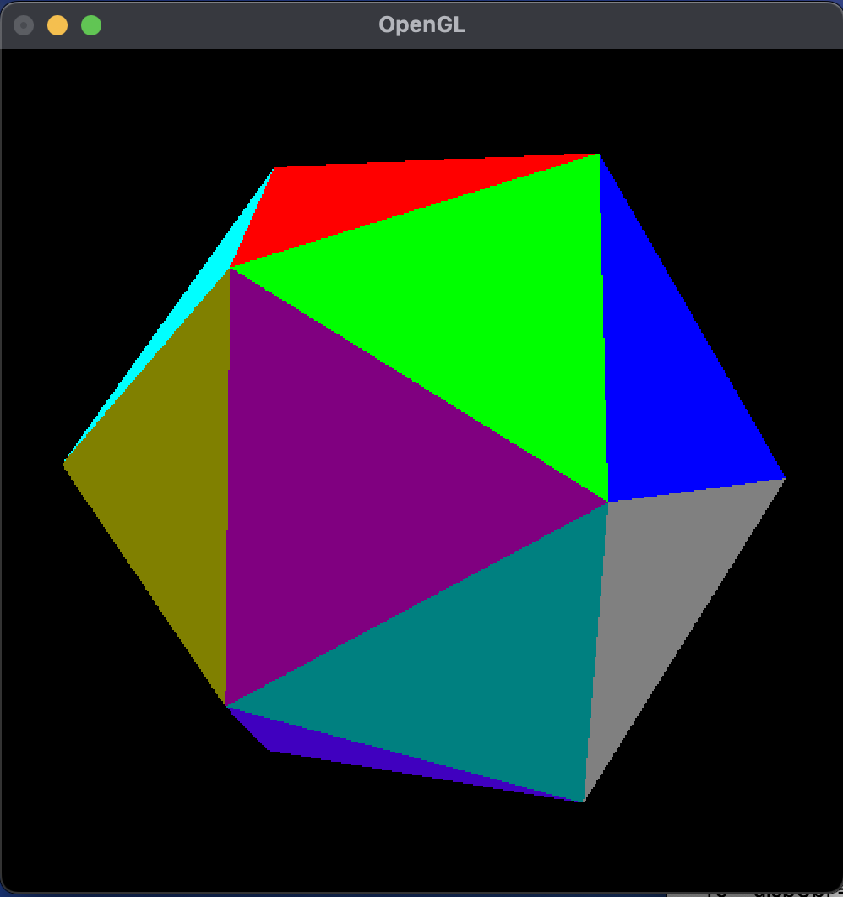
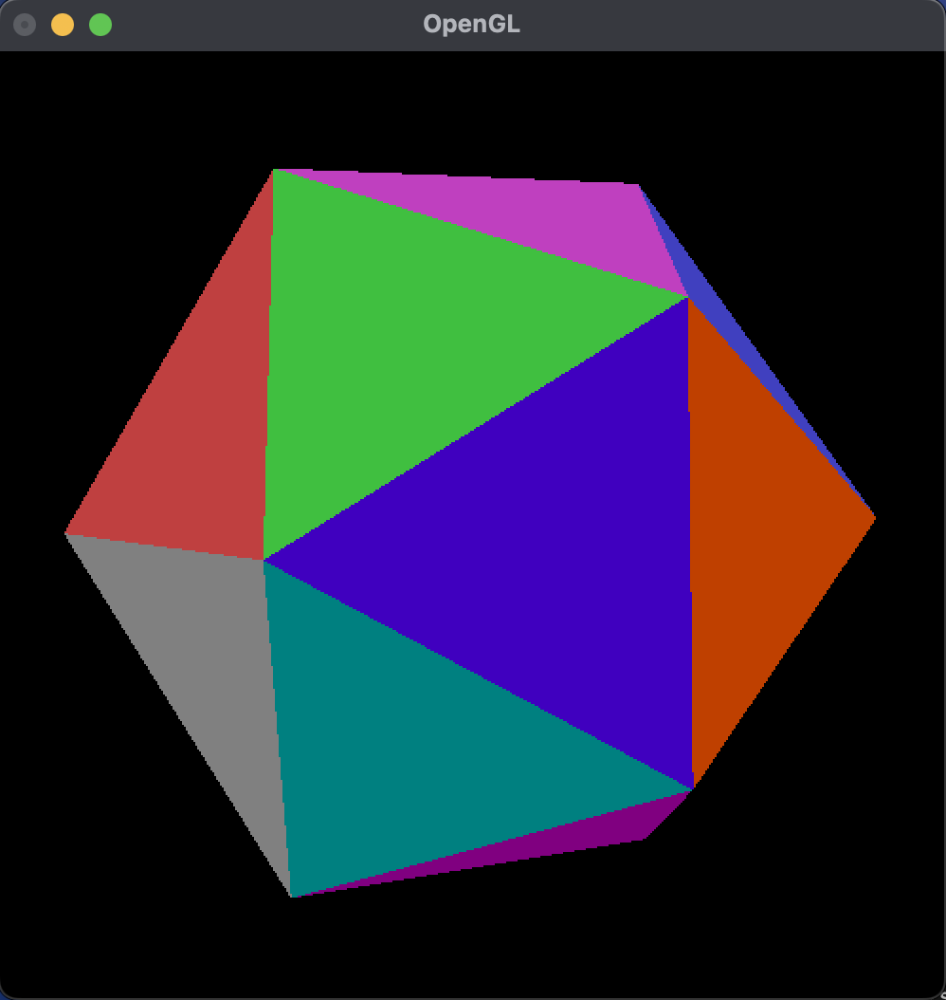
○考察
今回は、多面体を描画するPolyhedronクラスを用いて、正二十面体を描画するプログラムを走らせた。
Icosahedronクラスのコンストラクタで、頂点座標と各面を構成する頂点のインデックス、稜線、色を指定すれば、正二十面体が描ける。正十二面体より頂点座標が単純だったので簡単に頂点のインデックスが指定できた。
実行結果は画像の通りで、2方向から確認すると期待通りに20色で塗り分けられた正二十面体が描画された。
□課題9.0 - 章末課題2 : フラクタル立体の表示(シェルピンスキー四面体) sirpinskiTetrahedron.py
○プログラムリスト
1 import numpy as np
2
3 from myGLCanvas3 import MyGLCanvas
4 from fractal import Fractal, getArgs
5 from tetrahedron import Tetrahedron
6
7
8 class SierpinskiTetrahedron(Fractal):
9 def __init__(self, times):
10 tetra = Tetrahedron()
11 nv = len(tetra.vertices)
12 # ne = len(tetra.edges)
13 SCL = 1/2
14 vecs = []
15 for i in range(nv):
16 vecs.append(np.array(tetra.vertices[i]) * (1-SCL))
17
18 # for i in range(ne):
19 # mid = (np.array(tetra.vertices[tetra.edges[i][0]]) +
20 # np.array(tetra.vertices[tetra.edges[i][1]])) / 2
21 # vecs.append(mid * (1-SCL))
22
23 super().__init__(tetra, SCL, vecs, times)
24
25
26 def main():
27 times, args = getArgs()
28 canvas = MyGLCanvas()
29 dispObj = SierpinskiTetrahedron(times)
30 canvas.init(dispObj)
31 canvas.argsInit(args)
32 canvas.loop()
33
34
35 if __name__ == "__main__":
36 main()
○実行コマンド
$ python sierpinskiTetrahedron.py 3
○実行結果
(文字列の表示なし)
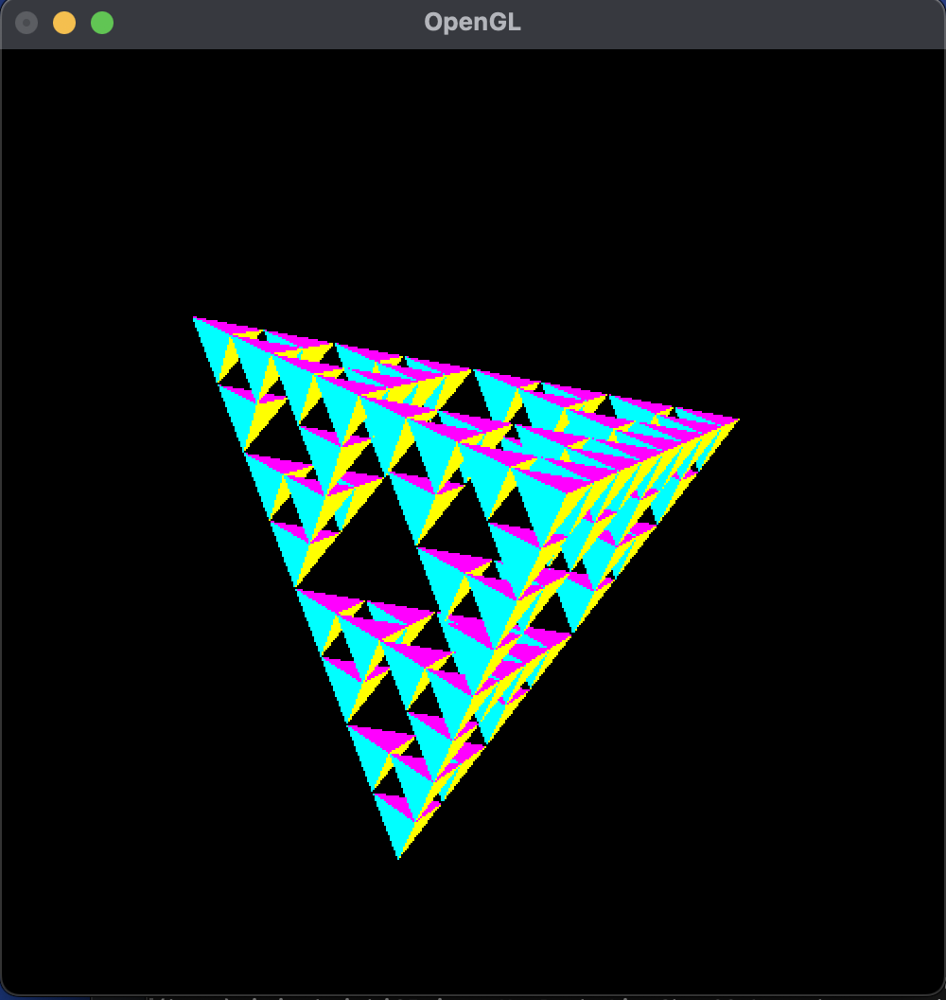
○考察
今回は、メンガースポンジのプログラムを参考にしてフラクタル立体の一種であるシェルピンスキー四面体を描画するプログラムを走らせた。
初めはメンガースポンジのプログラムのスケールのみを変更してプログラムを実行したが、当然のように期待通りの結果が得られなかった。それはプログラム中18~21行目でコメントアウトしている稜線の中点への並行移動ベクトルを残したままだからであった。メンガースポンジの場合は1.頂点を共有する2.稜線の中点を共有するという2種類あるため、この部分が必要だがシェルピンスキー四面体の場合は全て頂点を共有するものなのでこの部分はいらない。
実行結果は画像の通りで、期待通りの結果が得られた。ハウスドルフ次元はスケールが2倍になると、体積が4倍になるのでlog2(4) = 2である。これよりシェルピンスキー四面体はメンガースポンジと比べてあまり、複雑な自己相似性を持たないことがわかる。
□課題9.0 - 章末課題2 : フラクタル立体の表示(八面体片) octahedronFragment.py
○プログラムリスト
1 import numpy as np
2
3 from myGLCanvas import MyGLCanvas
4 from fractal import Fractal, getArgs
5 from octahedron import Octahedron
6
7
8 class OctahedronFragment(Fractal):
9 def __init__(self, times):
10 octa = Octahedron()
11 nv = len(octa.vertices)
12 SCL = 1/2
13 vecs = []
14 for i in range(nv):
15 vecs.append(np.array(octa.vertices[i]) * (1-SCL))
16
17 super().__init__(octa, SCL, vecs, times)
18
19
20 def main():
21 times, args = getArgs()
22 canvas = MyGLCanvas()
23 dispObj = OctahedronFragment(times)
24 canvas.init(dispObj)
25 canvas.argsInit(args)
26 canvas.loop()
27
28
29 if __name__ == "__main__":
30 main()
○実行コマンド
$ python octahedronFragment.py 3
○実行結果
(文字列の表示なし)
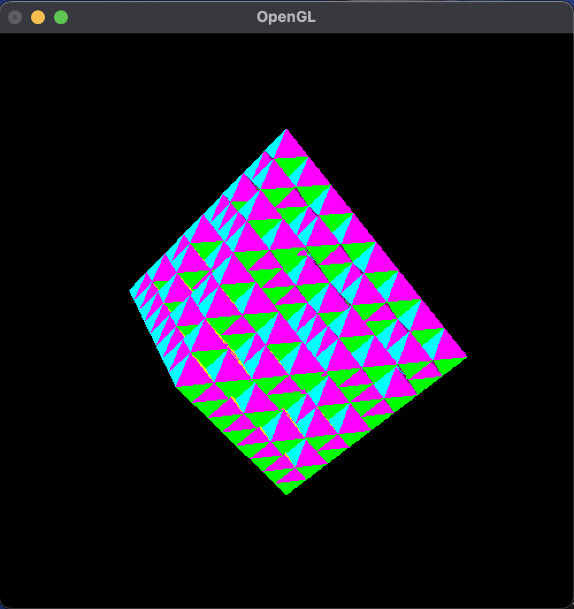
○考察
今回は、フラクタル立体である八面体片を描画するプログラムを走らせた。
シェルピンスキー四面体と同じように、スケールは1/2で縮小された八面体はそれぞれの頂点と共有するため、シェルピンスキー四面体と同じようなプログラムになると考えた。
実行結果は画像の通りで、期待通り八面体の各頂点に1/2にスケールされた八面体がついた八面体片が描画できた。ハウスドルフ次元はスケールが2倍になると体積は6倍になるのでlog2(6) = 2.58496である。このことからメンガースポンジほどではないが、3次元空間により広がった自己相似構造を持つことがわかる
□課題9.0 - 章末課題2 : フラクタル立体の表示(十二面体片) dodecahedronFragment.py
○プログラムリスト
1 import numpy as np
2
3 from myGLCanvas import MyGLCanvas
4 from fractal import Fractal, getArgs
5 from dodecahedron import Dodecahedron
6
7
8 class DodecahedronFragment(Fractal):
9 def __init__(self, times):
10 dodeca = Dodecahedron()
11 nv = len(dodeca.vertices)
12 phi = (1 + 5**0.5) / 2
13 SCL = 1/(2+phi)
14 vecs = []
15 for i in range(nv):
16 vecs.append(np.array(dodeca.vertices[i]) * (1-SCL))
17
18 super().__init__(dodeca, SCL, vecs, times)
19
20
21 def main():
22 times, args = getArgs()
23 canvas = MyGLCanvas()
24 dispObj = DodecahedronFragment(times)
25 canvas.init(dispObj)
26 canvas.argsInit(args)
27 canvas.loop()
28
29
30 if __name__ == "__main__":
31 main()
○実行コマンド
$ python dodecahedronFragment.py 3
○実行結果
(文字列の表示なし)
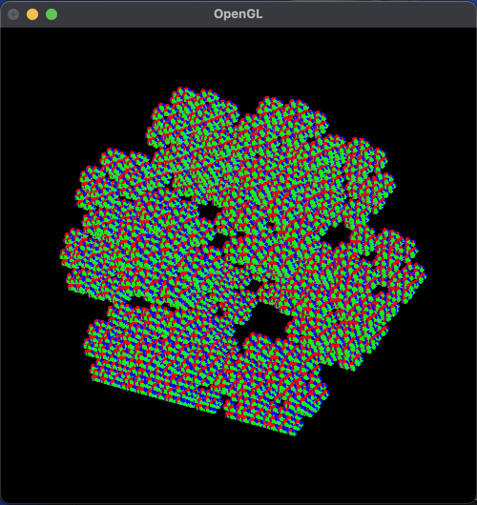
○考察
今回は、フラクタル立体である十二面体片を描画するプログラムを走らせた。
この立体はスケール1/(2+phi)で縮小した正十二面体を各頂点を共有する処理を再帰的に行うことでできる
実行結果は画像の通りで、期待通りに十二面体片が描画された。ハウスドルフ次元はスケールが3.62倍になると体積が20倍になるため、log3.62(20) = 2.32864となる。八面体片よりも次元が小さいのは、画像を見ればわかるとおり十二面体は隙間が出来やすい構造だからだと考えた。よって次の二十面体片ではもっとハウスドルフ次元が小さいと予想する。
□課題9.0 - 章末課題2 : フラクタル立体の表示(二十面体片) icosahedronFragment.py
○プログラムリスト
1 import numpy as np
2
3 from myGLCanvas import MyGLCanvas
4 from fractal import Fractal, getArgs
5 from icosahedron import Icosahedron
6
7
8 class IcosahedronFragment(Fractal):
9 def __init__(self, times):
10 icosa = Icosahedron()
11 nv = len(icosa.vertices)
12 phi = (1 + 5**0.5) / 2
13 SCL = 1/(1+phi)
14 vecs = []
15 for i in range(nv):
16 vecs.append(np.array(icosa.vertices[i]) * (1-SCL))
17
18 super().__init__(icosa, SCL, vecs, times)
19
20
21 def main():
22 times, args = getArgs()
23 canvas = MyGLCanvas()
24 dispObj = IcosahedronFragment(times)
25 canvas.init(dispObj)
26 canvas.argsInit(args)
27 canvas.loop()
28
29
30 if __name__ == "__main__":
31 main()
○実行コマンド
$ python icosahedronFragment.py 3
○実行結果
(文字列の表示なし)
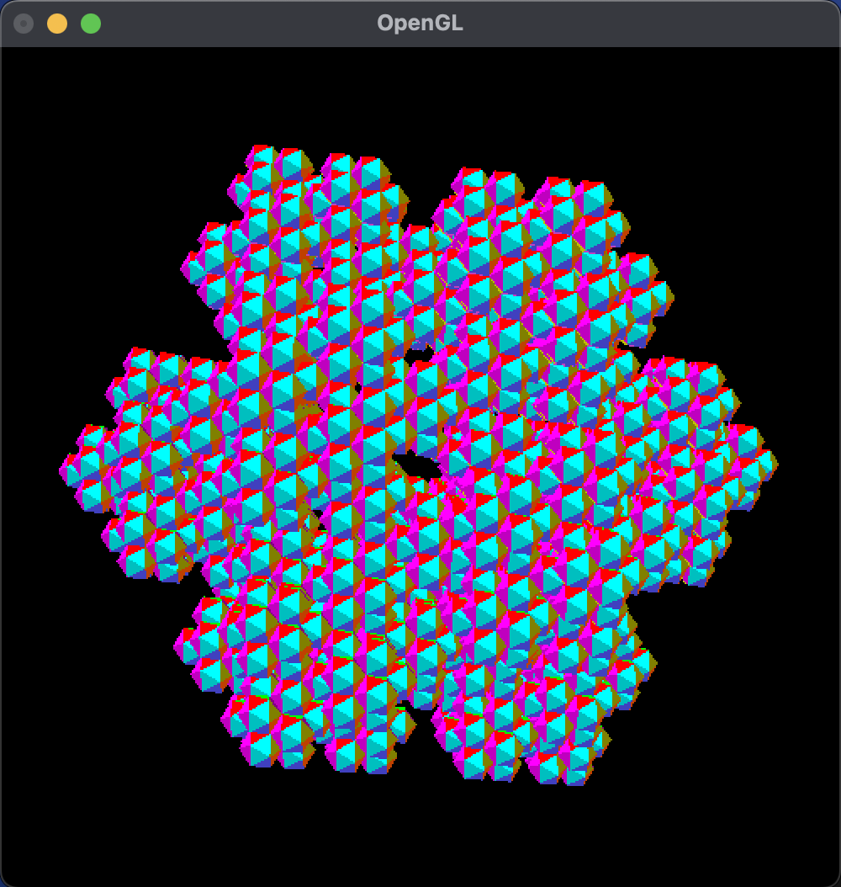
○考察
今回は、フラクタル図形である二十面体片を描画するプログラムを走らせた。
この立体はスケール1/(1+phi)で縮小した正二十面体を各頂点を共有する処理を再帰的に行うことでできる
実行結果は画像の通りで期待通り二十面体片が得られた。ハウスドルフ次元についてはスケールが2.62倍になると体積は12倍になるためlog2.62(12) = 2.57991となった。これは先ほどの正十二面体の次元と比べて小さくなるという予想とは異なる結果となった。それは実行結果を見ればわかる通り、正十二面体より正二十面体の方が対称性があり、空間をより効率的に充填させられるからだと考えた。
□課題や授業に関して
○レポート作成に要した時間
5時間
○特に苦労した点
以前のフラクタル図形の時も苦戦したように、今回も再帰処理の部分でつまづいて理解に時間がかかりました。
○授業についての感想や希望
本格的に3Dで立体を描画できるようになり楽しいです。次のアニメーションの授業がすごく楽しみです。